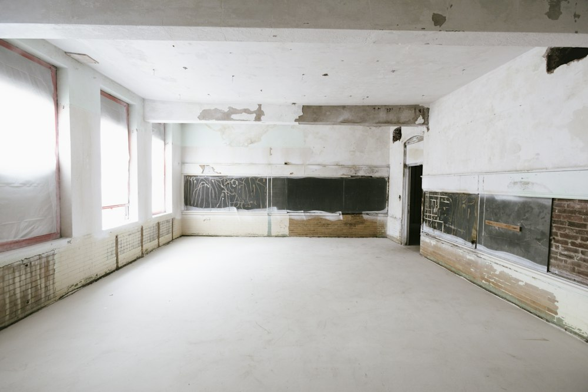
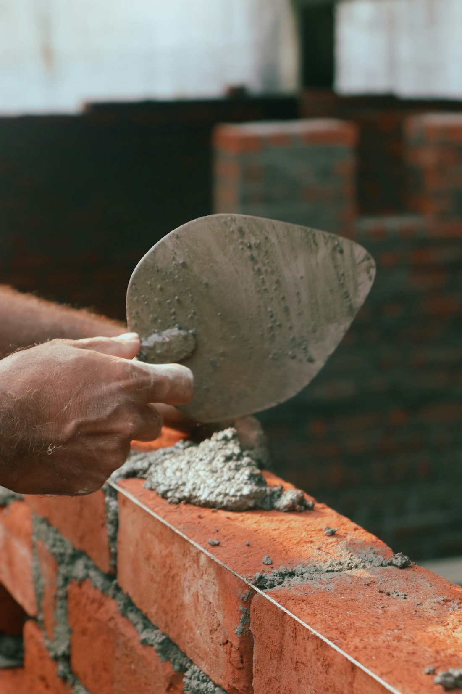
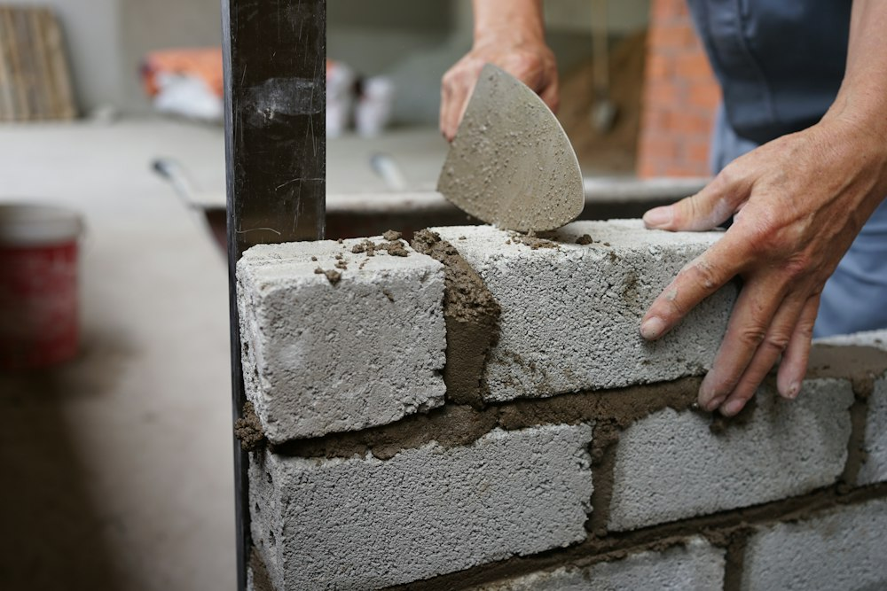
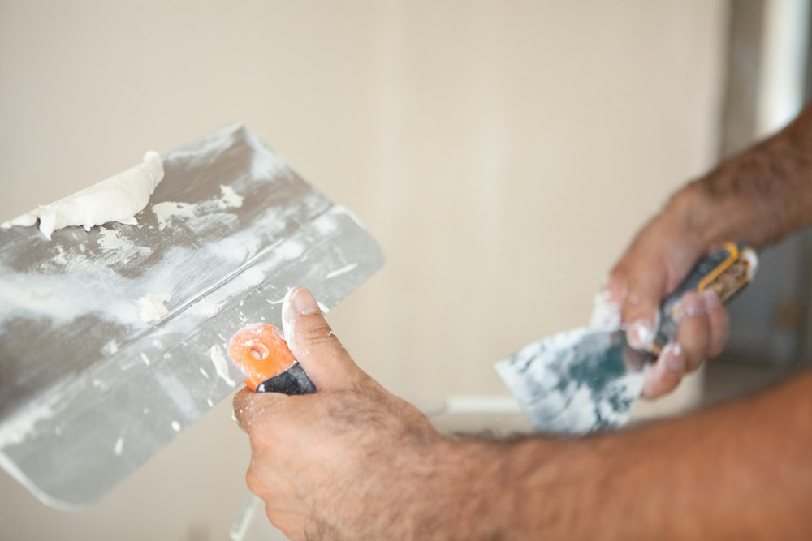
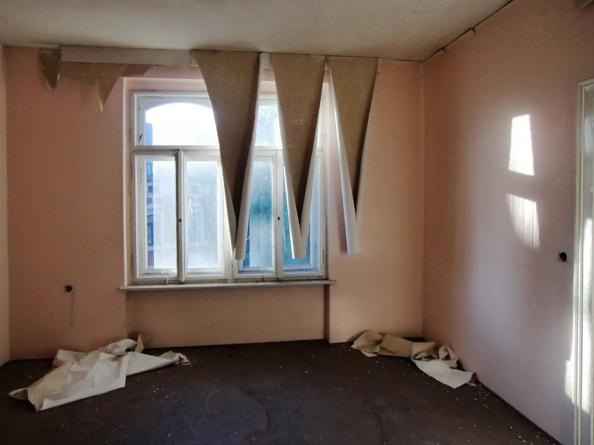
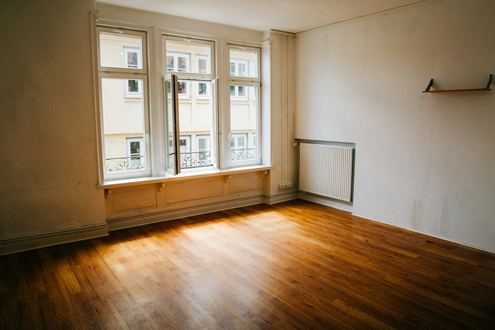
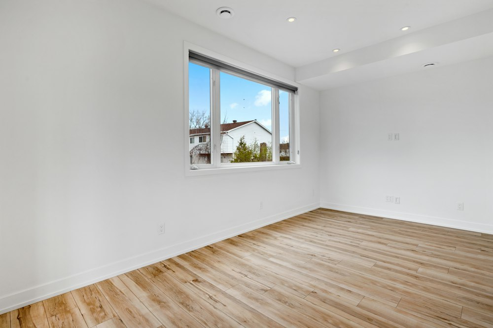
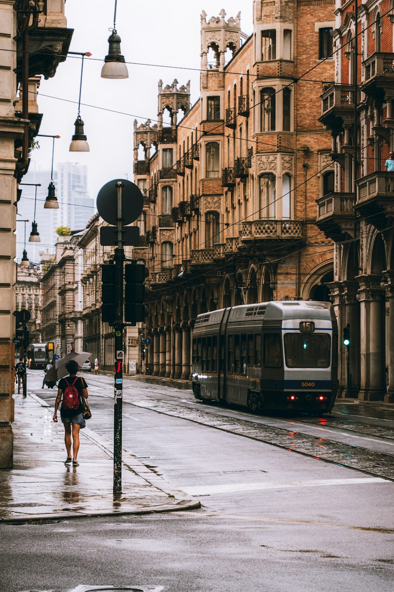

01
Ristrutturazioni di appartamenti
Dalle demolizioni alle finiture: pareti, pavimenti, intonaci, il cantiere coordinato fino alla fine.

Ristrutturazioni edili di Asim Balliu
Appartamenti da rifare, muri, intonaci e rasature. Parlate direttamente con il titolare.
01 / Lavori

Dalle demolizioni alle finiture: pareti, pavimenti, intonaci, il cantiere coordinato fino alla fine.

Tramezzi nuovi, aperture, chiusure e ripristini di murature.

Pareti e soffitti rifatti, lisci e pronti da tinteggiare.
Una parete da sistemare, una crepa, un intonaco da rifare: chiamate e ne parliamo.
Chiama Asim02 / Prima e dopo


Foto di esempio di due stanze simili, non un lavoro della ditta: qui vanno i vostri prima e dopo.
03 / Cantieri
Foto di esempio: qui vanno le foto dei vostri cantieri, da Santa Rita al resto della città.


04 / Titolare
Ristrutturazioni Edili di Asim Balliu è una ditta individuale di Torino, iscritta in Camera di Commercio per i lavori di muratura e i lavori edili. La sede è in Via Tunisi 63, tra Santa Rita e Mirafiori Nord.
Con una ditta individuale non ci sono passaggi in mezzo: il preventivo, le domande e i dubbi passano direttamente dal titolare.
05 / Come lavoriamo
Vediamo la casa e cosa c'è da fare.
Lavori e costi messi per iscritto.
Cantiere protetto e ordinato.
Casa pulita, pronta da vivere.
06 / Contatti
Chiamate o scrivete su WhatsApp: fissiamo un sopralluogo.